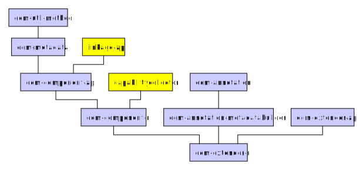

Everit Component Model
Everit Component Model
ECM is a component model designed to work well in large OSGi based applications. Developers who have used Declarative Services before will find the concept of ECM familiar.
While modularization gives lots of benefits to a project, developers often feel that the application skeleton is similar to a house of cards. If any of the component has an issue, part of the system collapses, and it is nearly impossible to find the origin of the problem. One of the goals of Everit Component Model is to help developers finding the cause of issues in OSGi.
Instead of whiteboard pattern, ECM supports the top-down configuration approach. While developers can wire components together with whiteboard pattern rapidly, they lose the ability of systematic issue detection. E.g.: When part of an application is not started, and no exception is thrown, it is hard to find the missing piece. Searching the issue is even harder when one has to fix an issue in an application that was written by other.
With top-down configuration design, developers can start searching the problem from the top of the application skeleton and by walking down on the unsatisfied component graph, they can find the original cause of the issue rapidly. With ECM, designing OSGi based applications becomes easier and more fun.
There are several ways to use the Everit Component Model. The easiest way is using OSGi extender pattern, while components can be created and started programmatically, too.
During development time, add the following dependencies (with their dependencies transitively):
bndlib with provided scope as it is only necessary for annotation processing
In order to be picked up by the extender, the component class must be annotated in the following way:
import org.everit.osgi.ecm.annotation.Component;
import aQute.bnd.annotation.headers.ProvideCapability;
@Component
@ProvideCapability(ns = ECMExtenderConstants.CAPABILITY_NS_COMPONENT,
value = ECMExtenderConstants.CAPABILITY_ATTR_CLASS + "" + "=${@class}")
public class MyComponent {
}
The documentation of ecm-annotation OSGi bundle contains the full list of annotations that can be used during the creation of a component class.
With a build tool that uses bndlib inside, the necessary MANIFEST header will be automatically generated. Such tools are bndtools and maven-bundle-plugin. If this automation is not available, the Provide-Capability header must be manually defined:
Provide-Capability: org.everit.osgi.ecm.component;class="mypackage.MyComponent"
By having the necessary MANIFEST header, the ECM Extender will automatically pick up the specified class and look for annotations in it.
In the runtime environment, the following OSGi bundle should be installed with its dependencies:
Everit Component Model is designed in the way that Components can be created programmatically, too. During the development and also on the running OSGi container, the following OSGi bundle with its dependencies should be used:
In the following example, a very simple ECM Component Container is created and started within a Bundle-Activator:
import org.everit.osgi.ecm.component.ri.ComponentContainerFactory;
import org.everit.osgi.ecm.component.ri.ComponentContainerInstance;
import org.everit.osgi.ecm.metadata.ComponentMetadata;
import org.everit.osgi.ecm.metadata.ComponentMetadata.ComponentMetadataBuilder;
import org.osgi.framework.BundleActivator;
import org.osgi.framework.BundleContext;
public class MyActivator {
private ComponentContainerInstance<MyComponent> myComponentContainer
@Override
public void start(final BundleContext context) {
ComponentMetadataBuilder builder = new ComponentMetadataBuilder();
ComponentMetadata metadata = builder.withType(MyComponent.class).build();
ComponentContainerFactory factory = new ComponentContainerFactory(context);
this.myComponentContainer = factory.createComponentContainer(metadata);
this.myComponentContainer.open();
}
@Override
public void stop(final BundleContext context) {
this.myComponentContainer.close();
}
}
For more information, how to build ComponentMetadata programmatically, see the documentation of ecm-metadata OSGi bundle!
A Component Container handles the instantiation of Components based on the metadata of the Component and the available configuration. A Component Container has an opened and a closed state. When the Component Container is opened, an OSGi service is registered with the following interfaces:
org.everit.osgi.ecm.component.resource.ComponentContainer can be used to retrieve all information about the state of the container instance. Programmers can list the instantiated components, get the metadata that belongs to the component, etc.
org.osgi.service.cm.ManagedService if the configuration policy of the container is either OPTIONAL or REQUIRED.
org.osgi.service.cm.ManagedServiceFactory if the configuration policy of the container is REQUIRED.
org.osgi.service.metatype.MetaTypeProvider if the metatype data belongs to the container.
ECM relies on the Configuration Admin chapter of OSGi Compendium specification. If any configuration is necessary, the ComponentContainer OSGi service is registered with ManagedService or ManagedServiceFactory interface. Configuration Admin notifies the Component Container by calling the OSGi service if a new configuration is available, a configuration was modified or a configuration was deleted. The behavior of the Component Container depends on the configuration policy:
IGNORE: Neither ManagedService nor ManagedServieFactory interface is used when the ComponentContainer OSGi service is registered. The container instantiates and activates the component as soon as the container is opened and all references of the component are satisfied.
OPTIONAL: One component will be instantiated as soon as the container is started. In case there is a configuration for the component, the component will be upgraded. Although this is the default policy for components, we do not recommend using it. It makes the component uncertain.
REQUIRED: The component will be instantiated only if
ECM is built up from several bundles. Each bundle has its purpose. The separation is necessary to keep the technology stable and to be able to fix bugs in short development iterations. All bundles are available on maven-central.

Hello extender api